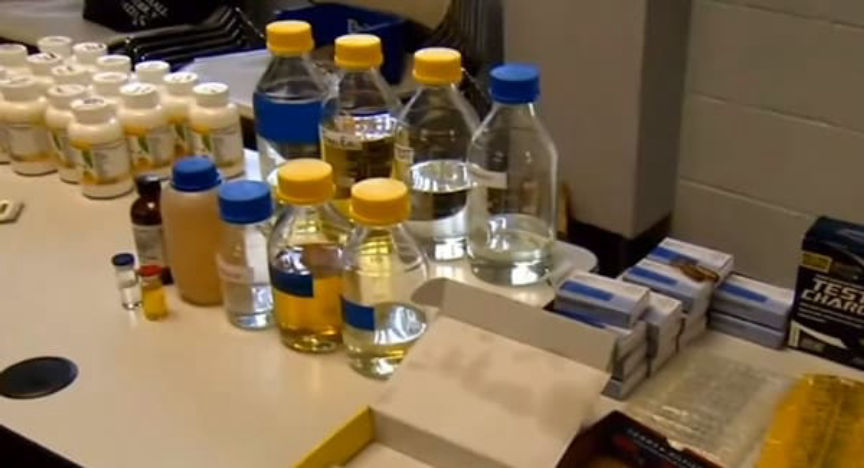
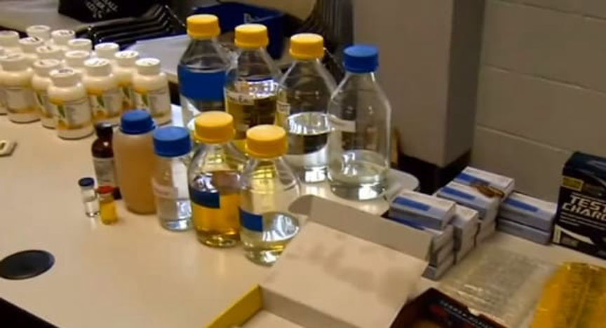

Alphabay Vendor "Qu4ntum" Admits Selling Steroids
~2 min read | Published on 2020-01-07, tagged Alphabay, Darkweb-Vendor, Drug-Bust, Drugs, Pleaded-Guilty using 414 words.
Eric Angle, the brother of retired wrestler Kurt Angle, pleaded guilty to selling anabolic steroids on Alphabay, Dream, and Wall Street Market under under the username “qu4ntum.” Other co-conspirators pleaded guilty to the same charge in addition to a related money laundering charge.
Previously: Three Indicted for Selling Steroids on the Darkweb
Angle, according to an indictment filed in September 2019, had two co-conspirators. Ronald Roginsky and John Ambrose. Roginsky, the leader of the group, created steroids. Angle and Ambrose sold steroids produced by Roginsky on the darkweb and on bodybuilding forums on the surface web. Roginsky, when not producing steroids, also sold them online as well as in person.
The September 2019 indictment (available here) accused the three defendants of conspiracy to distribute controlled substances; conspiracy to import controlled substances; distributing controlled substances by means of the internet; and conspiracy to launder money.
The group used cryptocurrency exchanges to launder money, according to court documents. Like the operation dark gold targets, the defendants also shipped cash through the Postal Service.
Court documents detailed the money laundering charge as follows:
The defendants utilized digital currency (such as Bitcoin) to conceal and disguise the nature, location, source, ownership and control of the drug proceeds; They Maintained and controlled digital currency addresses through which customers paid them in exchange for narcotics; They used digital currency exchanges to convert cryptocurrency drug trafficking proceeds into official fiat currency; Shipped cash in the mail as payment for controlled substances.
The group sold at least 60,000 doses of steroids, according to the indictment. Roginsky produced the product at a large-scale, using as many as ten P.O. boxes and UPS private mailboxes to receive precursor chemicals from bulk suppliers in China.
Angle admitted reselling at least 721 grams of steroids.
With a trial scheduled for next week, all three defendants entered guilty pleas as to count one of the indictment (conspiracy to distribute controlled substances) and Roginsky pleaded guilty to count four as well (conspiracy to launder money). Roginsky already agreed to forfeit more than $213,000 in cash, an undisclosed amount of Bitcoin, a 2018 Chevrolet Silverado, a 2016 Chevrolet Tahoe, and a 1985 Buick Regal. According to Cleveland.com, Roginsky told a Postal Inspector that he had used the steroid money to make a down payment on a house as well.
A sentencing hearing before U.S. District Judge James Gwin will take place in April 2020.
Below is part of the related complaint against Roginsky detailing the United States Postal Inspection Service’s involvement in the case:
Previously: Three Indicted for Selling Steroids on the Darkweb
Angle, according to an indictment filed in September 2019, had two co-conspirators. Ronald Roginsky and John Ambrose. Roginsky, the leader of the group, created steroids. Angle and Ambrose sold steroids produced by Roginsky on the darkweb and on bodybuilding forums on the surface web. Roginsky, when not producing steroids, also sold them online as well as in person.
Steroid precursors and related products seized during a police raid
The September 2019 indictment (available here) accused the three defendants of conspiracy to distribute controlled substances; conspiracy to import controlled substances; distributing controlled substances by means of the internet; and conspiracy to launder money.
The group used cryptocurrency exchanges to launder money, according to court documents. Like the operation dark gold targets, the defendants also shipped cash through the Postal Service.
Court documents detailed the money laundering charge as follows:
The group sold at least 60,000 doses of steroids, according to the indictment. Roginsky produced the product at a large-scale, using as many as ten P.O. boxes and UPS private mailboxes to receive precursor chemicals from bulk suppliers in China.
Angle admitted reselling at least 721 grams of steroids.
With a trial scheduled for next week, all three defendants entered guilty pleas as to count one of the indictment (conspiracy to distribute controlled substances) and Roginsky pleaded guilty to count four as well (conspiracy to launder money). Roginsky already agreed to forfeit more than $213,000 in cash, an undisclosed amount of Bitcoin, a 2018 Chevrolet Silverado, a 2016 Chevrolet Tahoe, and a 1985 Buick Regal. According to Cleveland.com, Roginsky told a Postal Inspector that he had used the steroid money to make a down payment on a house as well.
A sentencing hearing before U.S. District Judge James Gwin will take place in April 2020.
Below is part of the related complaint against Roginsky detailing the United States Postal Inspection Service’s involvement in the case: